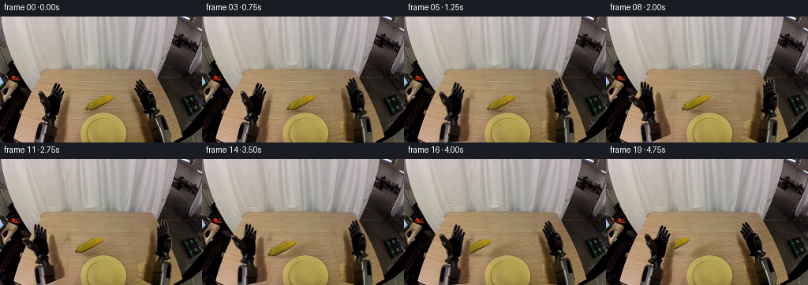
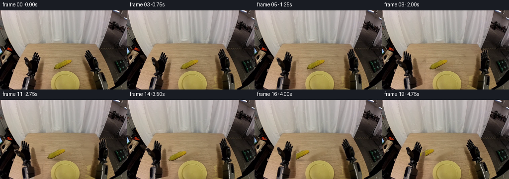

CODING AGENTS AS PIXEL WORLD MODELS
traex/DeepSeek-V4.1-Flash · common50_0040
点击播放 · 原生 RGB 像素
逐轮保存的候选
回放视频、检查图与代码变化。
每份候选均可单独播放。实际图片检查记录在下方工具轨迹中。
候选 01播放与检查图
点击播放 · 原生 RGB 像素

展开代码变化
--- 上一保存版本
+++ 本次保存版本
@@ -0,0 +1,285 @@
+from pathlib import Path
+
+import cv2
+import numpy as np
+from PIL import Image
+
+import artifact_io
+
+
+ROOT = Path(__file__).resolve().parent
+WIDTH, HEIGHT, FRAME_COUNT = 256, 160, 20
+
+
+def largest_component(mask, min_area=20):
+ count, labels, stats, _ = cv2.connectedComponentsWithStats(
+ mask.astype(np.uint8), connectivity=8
+ )
+ if count <= 1:
+ return np.zeros_like(mask, dtype=bool)
+ areas = stats[1:, cv2.CC_STAT_AREA]
+ valid = np.flatnonzero(areas >= min_area)
+ if not len(valid):
+ return np.zeros_like(mask, dtype=bool)
+ index = 1 + valid[np.argmax(areas[valid])]
+ return labels == index
+
+
+def filled_external(mask):
+ contours, _ = cv2.findContours(
+ mask.astype(np.uint8), cv2.RETR_EXTERNAL, cv2.CHAIN_APPROX_SIMPLE
+ )
+ out = np.zeros_like(mask, dtype=np.uint8)
+ cv2.drawContours(out, contours, -1, 1, thickness=-1)
+ return out.astype(bool)
+
+
+def soft_alpha(mask, feather=0.8):
+ alpha = cv2.GaussianBlur(mask.astype(np.float32), (0, 0), feather)
+ alpha = np.maximum(alpha, mask.astype(np.float32))
+ return np.clip(alpha, 0.0, 1.0)
+
+
+def build_masks(image):
+ hsv = cv2.cvtColor(image, cv2.COLOR_RGB2HSV)
+ hue, saturation, value = [hsv[:, :, i] for i in range(3)]
+ yy, xx = np.indices((HEIGHT, WIDTH))
+
+ left_raw = (
+ (value < 132)
+ & (xx >= 38)
+ & (xx <= 88)
+ & (yy >= 77)
+ )
+ right_raw = (
+ (value < 132)
+ & (xx >= 162)
+ & (xx <= 218)
+ & (yy >= 72)
+ )
+ left = filled_external(largest_component(left_raw, 450))
+ right = filled_external(largest_component(right_raw, 450))
+
+ yellow = (
+ (hue >= 18)
+ & (hue <= 42)
+ & (saturation >= 112)
+ & (value >= 68)
+ & (image[:, :, 2] < 58)
+ & (xx >= 96)
+ & (xx <= 166)
+ & (yy >= 92)
+ & (yy <= 124)
+ )
+ corn_core = largest_component(yellow, 40)
+ corn = filled_external(corn_core)
+ corn = cv2.dilate(corn.astype(np.uint8), np.ones((3, 3), np.uint8)) > 0
+ return left, right, corn
+
+
+def build_static_background(image, left, right, corn):
+ # The masks touch the frame edge, so inpaint a slightly expanded version
+ # while preserving the original pixels everywhere else.
+ masks = np.zeros((HEIGHT, WIDTH), dtype=np.uint8)
+ masks[left | right | corn] = 255
+ masks = cv2.dilate(masks, np.ones((3, 3), np.uint8))
+ background = cv2.inpaint(
+ cv2.cvtColor(image, cv2.COLOR_RGB2BGR),
+ masks,
+ 4,
+ cv2.INPAINT_TELEA,
+ )
+ background = cv2.cvtColor(background, cv2.COLOR_BGR2RGB)
+
+ # Inpainting across the tall edge masks can streak vertically. Rebuild
+ # those exposed strips from nearby rows, which keeps the wall/table split.
+ for x0, x1 in ((0, 91), (159, 256)):
+ region = background[:, x0:x1].astype(np.float32)
+ if x0 == 0:
+ source = background[:, x1:x1 + 26].astype(np.float32)
+ source = source[:, ::-1]
+ else:
+ source = background[:, max(0, x0 - 26):x0].astype(np.float32)
+ source = source[:, ::-1]
+ source = cv2.resize(source, (x1 - x0, HEIGHT))
+ exposed = masks[:, x0:x1].astype(bool)
+ blend = exposed & (yy_grid()[:, x0:x1] >= 63)
+ region[blend] = (
+ 0.55 * region[blend]
+ + 0.45 * source[blend]
+ )
+ background[:, x0:x1] = np.clip(region, 0, 255).astype(np.uint8)
+ return background
+
+
+def yy_grid():
+ return np.indices((HEIGHT, WIDTH))[0]
+
+
+def rotate_layer(image, mask, pivot, angle):
+ matrix = cv2.getRotationMatrix2D(pivot, angle, 1.0)
+ warped = cv2.warpAffine(
+ image,
+ matrix,
+ (WIDTH, HEIGHT),
+ flags=cv2.INTER_LINEAR,
+ borderMode=cv2.BORDER_REFLECT_101,
+ )
+ warped_mask = cv2.warpAffine(
+ mask.astype(np.float32),
+ matrix,
+ (WIDTH, HEIGHT),
+ flags=cv2.INTER_LINEAR,
+ borderMode=cv2.BORDER_CONSTANT,
+ borderValue=0,
+ )
+ return warped, warped_mask
+
+
+def crop_rgba(image, mask):
+ ys, xs = np.where(mask)
+ x0, x1 = xs.min(), xs.max() + 1
+ y0, y1 = ys.min(), ys.max() + 1
+ rgba = np.dstack(
+ [
+ image[y0:y1, x0:x1],
+ (mask[y0:y1, x0:x1].astype(np.float32) * 255).astype(np.uint8),
+ ]
+ )
+ return rgba, (x0, y0, x1, y1)
+
+
+def paste_rgba(canvas, rgba, center):
+ h, w = rgba.shape[:2]
+ x = int(round(center[0] - w / 2))
+ y = int(round(center[1] - h / 2))
+ x0, y0 = max(0, x), max(0, y)
+ x1, y1 = min(WIDTH, x + w), min(HEIGHT, y + h)
+ if x1 <= x0 or y1 <= y0:
+ return
+ sx0, sy0 = x0 - x, y0 - y
+ patch = rgba[sy0:sy0 + y1 - y0, sx0:sx0 + x1 - x0]
+ alpha = patch[:, :, 3:4].astype(np.float32) / 255.0
+ dst = canvas[y0:y1, x0:x1].astype(np.float32)
+ canvas[y0:y1, x0:x1] = np.clip(
+ patch[:, :, :3].astype(np.float32) * alpha + dst * (1.0 - alpha),
+ 0,
+ 255,
+ ).astype(np.uint8)
+
+
+def paste_warped(canvas, warped, alpha):
+ a = alpha[:, :, None].astype(np.float32)
+ canvas[:] = np.clip(
+ warped.astype(np.float32) * a + canvas.astype(np.float32) * (1.0 - a),
+ 0,
+ 255,
+ ).astype(np.uint8)
+
+
+def ease(t):
+ t = float(np.clip(t, 0.0, 1.0))
+ return t * t * (3.0 - 2.0 * t)
+
+
+def segment(t, start, end):
+ if end <= start:
+ return float(t >= end)
+ return ease((t - start) / (end - start))
+
+
+def trajectory(index):
+ t = index / (FRAME_COUNT - 1)
+ left_angle = 0.0
+ right_angle = 0.0
+ corn_center = (125.5, 109.5)
+ corn_owner = "right"
+
+ if index <= 3:
+ right_angle = -12.0 * segment(t, 0.0, 0.18)
+ elif index <= 8:
+ right_angle = -12.0 - 15.0 * segment(t, 0.18, 0.46)
+ left_angle = 23.0 * segment(t, 0.18, 0.46)
+ corn_center = (
+ 125.5 - 12.0 * segment(t, 0.18, 0.46),
+ 109.5,
+ )
+ elif index <= 10:
+ right_angle = -27.0
+ left_angle = 23.0
+ corn_center = (113.5, 109.5)
+ else:
+ p = segment(t, 0.53, 0.96)
+ left_angle = 23.0 * (1.0 - p)
+ right_angle = -27.0 * (1.0 - p)
+ corn_center = (
+ 113.5 - 26.0 * p,
+ 109.5 + 4.0 * np.sin(np.pi * p),
+ )
+ corn_owner = "left"
+ return left_angle, right_angle, corn_center, corn_owner
+
+
+def add_contact_shadow(canvas, center, scale=1.0):
+ yy, xx = np.indices((HEIGHT, WIDTH))
+ cx, cy = center[0] - 2.0, center[1] + 10.0
+ ellipse = (
+ ((xx - cx) / (18.0 * scale)) ** 2
+ + ((yy - cy) / (4.5 * scale)) ** 2
+ )
+ alpha = np.exp(-2.4 * ellipse) * 0.20
+ plate_region = (yy >= 105) & (yy <= 159)
+ alpha *= plate_region
+ canvas[:] = np.clip(
+ canvas.astype(np.float32) * (1.0 - alpha[:, :, None]),
+ 0,
+ 255,
+ ).astype(np.uint8)
+
+
+def render():
+ source = np.asarray(Image.open(ROOT / "first_frame.png").convert("RGB"))
+ left_mask, right_mask, corn_mask = build_masks(source)
+ background = build_static_background(source, left_mask, right_mask, corn_mask)
+
+ left_alpha = soft_alpha(left_mask, 0.55)
+ right_alpha = soft_alpha(right_mask, 0.55)
+ corn_rgba, _ = crop_rgba(source, corn_mask)
+
+ frames = []
+ for index in range(FRAME_COUNT):
+ if index == 0:
+ frames.append(source.copy())
+ continue
+
+ left_angle, right_angle, corn_center, owner = trajectory(index)
+ canvas = background.copy()
+ add_contact_shadow(canvas, corn_center, 0.90 if owner == "left" else 0.72)
+
+ left_warped, left_a = rotate_layer(
+ source, left_alpha, (54.0, 151.0), left_angle
+ )
+ right_warped, right_a = rotate_layer(
+ source, right_alpha, (195.0, 151.0), right_angle
+ )
+ paste_warped(canvas, left_warped, left_a)
+ paste_warped(canvas, right_warped, right_a)
+
+ # Keep the corn just in front of the active gripper, then let the
+ # receiving gripper take visual precedence after the handoff.
+ if owner == "left":
+ paste_rgba(canvas, corn_rgba, corn_center)
+ paste_warped(canvas, left_warped, left_a)
+ else:
+ paste_warped(canvas, right_warped, right_a)
+ paste_rgba(canvas, corn_rgba, corn_center)
+ frames.append(canvas)
+
+ frames = np.stack(frames).astype(np.uint8)
+ assert frames.shape == (FRAME_COUNT, HEIGHT, WIDTH, 3)
+ assert np.array_equal(frames[0], source)
+ return frames
+
+
+if __name__ == "__main__":
+ artifact_io.save(render(), ROOT)
候选 02播放与检查图
点击播放 · 原生 RGB 像素

展开代码变化
--- 上一保存版本
+++ 本次保存版本
@@ -268,11 +268,13 @@
# Keep the corn just in front of the active gripper, then let the
# receiving gripper take visual precedence after the handoff.
if owner == "left":
+ paste_warped(canvas, right_warped, right_a)
paste_rgba(canvas, corn_rgba, corn_center)
paste_warped(canvas, left_warped, left_a)
else:
+ paste_warped(canvas, left_warped, left_a)
+ paste_rgba(canvas, corn_rgba, corn_center)
paste_warped(canvas, right_warped, right_a)
- paste_rgba(canvas, corn_rgba, corn_center)
frames.append(canvas)
frames = np.stack(frames).astype(np.uint8)
候选 03播放与检查图

候选 04播放与检查图
点击播放 · 原生 RGB 像素

展开代码变化
--- 上一保存版本
+++ 本次保存版本
@@ -196,25 +196,27 @@
corn_owner = "right"
if index <= 3:
- right_angle = -12.0 * segment(t, 0.0, 0.18)
+ right_angle = 9.0 * segment(t, 0.0, 0.18)
elif index <= 8:
- right_angle = -12.0 - 15.0 * segment(t, 0.18, 0.46)
- left_angle = 23.0 * segment(t, 0.18, 0.46)
+ p = segment(t, 0.18, 0.46)
+ right_angle = 9.0 + 16.0 * p
+ left_angle = -24.0 * p
corn_center = (
- 125.5 - 12.0 * segment(t, 0.18, 0.46),
- 109.5,
+ 125.5 - 2.0 * p,
+ 109.5 - 1.0 * p,
)
elif index <= 10:
- right_angle = -27.0
- left_angle = 23.0
- corn_center = (113.5, 109.5)
+ settle = 0.5 * (index - 9)
+ right_angle = 25.0 - settle
+ left_angle = -24.5 - settle
+ corn_center = (123.5, 108.5)
else:
p = segment(t, 0.53, 0.96)
- left_angle = 23.0 * (1.0 - p)
- right_angle = -27.0 * (1.0 - p)
+ left_angle = -25.0 - 3.0 * np.sin(np.pi * p)
+ right_angle = 24.5 * (1.0 - p)
corn_center = (
- 113.5 - 26.0 * p,
- 109.5 + 4.0 * np.sin(np.pi * p),
+ 123.5 - 4.5 * p,
+ 108.5 - 4.0 * np.sin(np.pi * p),
)
corn_owner = "left"
return left_angle, right_angle, corn_center, corn_owner
候选 05播放与检查图
可观测工具轨迹
实际执行的命令与返回图片。
命令 1exit 0
/bin/bash -c 'cat prompt.txt'
命令 2exit 0
/bin/bash -c 'cat GENERATION_RULES.md'
命令 3exit 0
/bin/bash -c 'ls -la && file first_frame.png && identify first_frame.png 2>/dev/null || true'
命令 4exit 0
/bin/bash -c "sed -n '1,240p' artifact_io.py"
命令 5exit 0
/bin/bash -c "sed -n '1,240p' player_template.html"
命令 6exit 0
/bin/bash -c "cat task_spec.json && python - <<'PY'
from PIL import Image
import numpy as np
im=np.array(Image.open('first_frame.png').convert('RGB'))
print('shape',im.shape,'dtype',im.dtype)
print('range',im.min(axis=(0,1)),im.max(axis=(0,1)))
print('mean',im.mean(axis=(0,1)))
# top colors exact
u,c=np.unique(im.reshape(-1,3),axis=0,return_counts=True)
ix=np.argsort(c)[-30:][::-1]
for i in ix: print(tuple(u[i]),int(c[i]))
PY"命令 7exit 0
/bin/bash -c "python - <<'PY'
from PIL import Image
import numpy as np, colorsys
im=np.array(Image.open('first_frame.png').convert('RGB')).astype(float)/255
# downsample 2x2
h,w=im.shape[:2]
a=im.reshape(h//2,2,w//2,2,3).mean((1,3))
import matplotlib.colors as mc
hsv=mc.rgb_to_hsv(a)
# class chars
out=[]
for y in range(a.shape[0]):
row=''
for x in range(a.shape[1]):
r,g,b=a[y,x]; hh,ss,vv=hsv[y,x]
if vv<0.12: c=' '
elif ss<0.12:
if vv>.86:c='@'
elif vv>.68:c='W'
elif vv>.48:c='w'
elif vv>.3:c='g'
else:c='k'
elif hh<0.045 or hh>=0.94:
c='R' if vv>.28 else 'r'
elif hh<0.10:
c='O' if ss>.42 else 'o'
elif hh<0.18:
c='Y' if ss>.48 and vv>.48 else 'y'
elif hh<0.26:
c='L' if vv>.45 else 'l'
elif hh<0.46:
c='G'
elif hh<0.72:
c='B'
else:c='P'
row+=c
out.append(row)
print('\\n'.join(out))
PY"命令 8exit 0
/bin/bash -c "python - <<'PY'
from PIL import Image,ImageDraw
import numpy as np
im=np.array(Image.open('first_frame.png').convert('RGB'))
# save crops at 4x, and edge enhanced
for name,box in [('left',(0,0,140,160)),('right',(115,0,256,160)),('center',(70,35,190,125)),('lower',(0,80,256,160))]:
crop=Image.fromarray(im[box[1]:box[3],box[0]:box[2]])
crop.resize((crop.width*4,crop.height*4),Image.Resampling.NEAREST).save(f'.tmp/{name}.png')
# quantized palette clusters kmeans via PIL
q=Image.fromarray(im).quantize(colors=24,method=Image.Quantize.MEDIANCUT).convert('RGB')
q.resize((768,480),Image.Resampling.NEAREST).save('.tmp/quant.png')
# grid coordinates
p=Image.fromarray(im).resize((1024,640),Image.Resampling.NEAREST)
d=ImageDraw.Draw(p)
for x in range(0,256,16):
d.line((x*4,0,x*4,640),fill=(255,0,255),width=1); d.text((x*4+2,2),str(x),fill=(255,0,255))
for y in range(0,160,16):
d.line((0,y*4,1024,y*4),fill=(255,0,255),width=1); d.text((2,y*4+2),str(y),fill=(255,0,255))
p.save('.tmp/grid.png')
PY"命令 9exit 0
/bin/bash -c "python - <<'PY' mods=['cv2','scipy','skimage','numpy','PIL'] for m in mods: try: q=__import__(m); print(m,'OK',getattr(q,'__version__','')) except Exception as e: print(m,'NO',e) PY"
命令 10exit 1
/bin/bash -c "python - <<'PY'
from PIL import Image
import numpy as np, cv2
im=np.array(Image.open('first_frame.png').convert('RGB'))
# kmeans 16 clusters on Lab + xy maybe
lab=cv2.cvtColor(im,cv2.COLOR_RGB2LAB)
X=np.concatenate([lab.reshape(-1,3).astype(np.float32)*np.array([1,1.5,1.5]), np.indices((160,256)).reshape(2,-1).T.astype(np.float32)*.15],1)
crit=(cv2.TERM_CRITERIA_EPS+cv2.TERM_CRITERIA_MAX_ITER,50,.5)
_,labels,cent=cv2.kmeans(X,18,None,crit,10,cv2.KMEANS_PP_CENTERS)
labc=cent[:,:3]/np.array([1,1.5,1.5])
rgb=cv2.cvtColor(np.clip(labc,0,255).astype(np.uint8)[None],cv2.COLOR_LAB2RGB)[0]
for k in range(18):
m=(labels.reshape(160,256)==k); ys,xs=np.where(m)
print(k,'rgb',rgb[k].tolist(),'n',len(xs),'bbox',xs.min(),ys.min(),xs.max(),ys.max(),'meanxy',round(xs.mean(),1),round(ys.mean(),1))
# assign each cluster char and print half res majority
chars='0123456789ABCDEFGH'
for y in range(0,160,2):
row=''
for x in range(0,256,2):
a=labels.reshape(160,256)[y:y+2,x:x+2].ravel()
row+=chars[np.bincount(a,minlength=18).argmax()]
print(row)
PY"命令 11exit 0
/bin/bash -c "python - <<'PY'
from PIL import Image
import numpy as np, cv2
im=np.array(Image.open('first_frame.png').convert('RGB'))
lab=cv2.cvtColor(im,cv2.COLOR_RGB2LAB)
yx=np.indices((160,256)).reshape(2,-1).T.astype(np.float32)
X=np.concatenate([lab.reshape(-1,3).astype(np.float32)*np.array([1,1.5,1.5],np.float32), yx*.15],1).astype(np.float32)
crit=(cv2.TERM_CRITERIA_EPS+cv2.TERM_CRITERIA_MAX_ITER,50,.5)
_,labels,cent=cv2.kmeans(X,18,None,crit,10,cv2.KMEANS_PP_CENTERS)
labc=cent[:,:3]/np.array([1,1.5,1.5])
rgb=cv2.cvtColor(np.clip(labc,0,255).astype(np.uint8)[None],cv2.COLOR_LAB2RGB)[0]
for k in range(18):
m=(labels.reshape(160,256)==k); ys,xs=np.where(m)
print(k,'rgb',rgb[k].tolist(),'n',len(xs),'bbox',xs.min(),ys.min(),xs.max(),ys.max(),'meanxy',round(xs.mean(),1),round(ys.mean(),1))
chars='0123456789ABCDEFGH'
for y in range(0,160,2):
row=''
for x in range(0,256,2):
a=labels.reshape(160,256)[y:y+2,x:x+2].ravel()
row+=chars[np.bincount(a,minlength=18).argmax()]
print(row)
PY"命令 12exit 0
/bin/bash -c "python - <<'PY'
import numpy as np, cv2
from PIL import Image
im=np.array(Image.open('first_frame.png').convert('RGB'))
hsv=cv2.cvtColor(im,cv2.COLOR_RGB2HSV)
# connected components per masks
for name,m in [
('yellow',(hsv[:,:,0]>=18)&(hsv[:,:,0]<=42)&(hsv[:,:,1]>100)&(hsv[:,:,2]>80)),
('orange',(hsv[:,:,0]>=5)&(hsv[:,:,0]<25)&(hsv[:,:,1]>120)&(hsv[:,:,2]>70)),
('red',((hsv[:,:,0]<10)|(hsv[:,:,0]>170))&(hsv[:,:,1]>100)&(hsv[:,:,2]>50)),
('blue',(hsv[:,:,0]>90)&(hsv[:,:,0]<135)&(hsv[:,:,1]>70)),
('green',(hsv[:,:,0]>40)&(hsv[:,:,0]<90)&(hsv[:,:,1]>60)),
('dark',hsv[:,:,2]<50),
('light',hsv[:,:,2]>150),
]:
n,l,stats,c=cv2.connectedComponentsWithStats(m.astype(np.uint8),8)
print('\\n',name,'total',m.sum())
for i in np.argsort(stats[1:,4])[-12:][::-1]+1:
x,y,w,h,a=stats[i]
if a>=5: print(' ',a,(x,y,w,h),'mean',im[l==i].mean(0).round(1).tolist())
PY"命令 13exit 0
/bin/bash -c "python - <<'PY'
from PIL import Image
import numpy as np
im=np.array(Image.open('first_frame.png').convert('RGB'))
# print pixel values on grid key areas
for y in range(0,160,8):
print('y=%3d'%y, ' '.join('%3d,%3d,%3d'%tuple(im[y,x]) for x in range(0,256,16)))
PY"命令 14exit 0
/bin/bash -c "python - <<'PY'
from PIL import Image
import numpy as np, cv2
im=np.array(Image.open('first_frame.png').convert('RGB'))
g=cv2.cvtColor(im,cv2.COLOR_RGB2GRAY)
# contrast enhanced grayscale 2x2 blocks
sm=cv2.resize(g,(128,80),interpolation=cv2.INTER_AREA)
chars=' .:-=+*#%@'
for row in sm:
print(''.join(chars[min(9,int(v/256*10))] for v in row))
print('\\nEDGES')
e=cv2.Canny(im,40,100)
e=cv2.dilate(e,np.ones((2,2),np.uint8))
e=cv2.resize(e,(128,80),interpolation=cv2.INTER_AREA)
for row in e:
print(''.join('#' if v>40 else '+' if v>10 else ' ' for v in row))
PY"命令 15exit 0
/bin/bash -c "python - <<'PY'
from PIL import Image
import numpy as np, cv2
im=np.array(Image.open('first_frame.png').convert('RGB'))
hsv=cv2.cvtColor(im,cv2.COLOR_RGB2HSV)
# classes priority
H,S,V=[hsv[:,:,i] for i in range(3)]
masks={
' ': (V<35),
'#': (V<70),
'@': (S<35)&(V>180),
'.': (S<45)&(V>90),
'w': (S<55)&(V>=55),
't': (H>=8)&(H<22)&(S>=45)&(V>=45), # table tan/brown
'Y': (H>=20)&(H<=38)&(S>=105)&(V>=75),
'y': (H>=15)&(H<40)&(S>=70)&(V>=45),
'r': ((H<8)|(H>170))&(S>=70)&(V>=45),
'B': (H>=90)&(H<=140)&(S>=45),
'G': (H>=40)&(H<90)&(S>=45),
}
names=list(masks)
# block size4, dominant weighted
for y in range(0,160,4):
row=''
for x in range(0,256,4):
scores=[]
for ch,m in masks.items():
# center weighted crop
scores.append(m[y:y+4,x:x+4].sum())
row+=names[int(np.argmax(scores))]
print(row)
PY"命令 16exit 0
/bin/bash -c "python - <<'PY'
from PIL import Image
import numpy as np, cv2
im=np.array(Image.open('first_frame.png').convert('RGB'))
hsv=cv2.cvtColor(im,cv2.COLOR_RGB2HSV)
H,S,V=[hsv[:,:,i].astype(int) for i in range(3)]
# masks, report runs for selected rows
masks={
'Y':(H>=20)&(H<=42)&(S>=100)&(V>=75),
'O':(H>=5)&(H<22)&(S>=100)&(V>=55),
'D':(V<60),
'L':(S<45)&(V>150),
'T':(H>=8)&(H<25)&(S>=40)&(S<130)&(V>=70),
'R':(H<8)&(S>=80)&(V>=60),
'B':(H>=90)&(H<=140)&(S>=45),
}
for y in [50,55,60,65,70,75,80,85,90,95,100,105,110,115,120,125,130,135,140,145,150,155,159]:
print('\\ny',y)
for k,m in masks.items():
a=m[y]
# runs min 3
d=np.diff(np.r_[False,a,False].astype(int)); starts=np.where(d==1)[0]; ends=np.where(d==-1)[0]
runs=[(int(s),int(e-1)) for s,e in zip(starts,ends) if e-s>=3]
if runs: print(k, runs)
PY"命令 17exit 0
/bin/bash -c "python - <<'PY'
from PIL import Image
import numpy as np, cv2
im=np.array(Image.open('first_frame.png').convert('RGB'))
hsv=cv2.cvtColor(im,cv2.COLOR_RGB2HSV); H,S,V=[hsv[:,:,i].astype(int) for i in range(3)]
# print row runs for dark and tan at 4px res, from y44
D=(V<70)
Y=(H>=20)&(H<=42)&(S>=100)&(V>=75)
for y in range(44,160,4):
def runs(m):
a=m[y:y+4].sum(0)>=2
d=np.diff(np.r_[False,a,False].astype(int)); st=np.where(d==1)[0]; en=np.where(d==-1)[0]
return [(int(s),int(e-1)) for s,e in zip(st,en) if e-s>=2]
print(f'{y:3d} D{runs(D)} Y{runs(Y)}')
PY"命令 18exit 0
/bin/bash -c "python - <<'PY'
from PIL import Image
import numpy as np
im=np.array(Image.open('first_frame.png').convert('RGB'))
# six crops enlarge nearest and bilinear
boxes={'topright':(160,0,256,105),'bottomright':(155,65,256,160),'leftarm':(0,45,120,160),'corn':(90,85,175,160),'plate':(95,112,170,160)}
for name,b in boxes.items():
c=Image.fromarray(im[b[1]:b[3],b[0]:b[2]])
c.resize((c.width*6,c.height*6),Image.Resampling.NEAREST).save(f'.tmp/{name}_n.png')
c.resize((c.width*6,c.height*6),Image.Resampling.LANCZOS).save(f'.tmp/{name}_l.png')
PY"命令 19exit 0
/bin/bash -c "python - <<'PY'
from PIL import Image
import numpy as np
im=np.array(Image.open('first_frame.png').convert('RGB'))
# use cv2 dnn? report clusters in right dark component using masks and PCA
import cv2
hsv=cv2.cvtColor(im,cv2.COLOR_RGB2HSV)
for thresh in [40,60,80,100,130,160]:
m=(hsv[:,:,2]<thresh).astype(np.uint8)
n,l,st,c=cv2.connectedComponentsWithStats(m,8)
print('\\nthresh',thresh)
for i in np.argsort(st[1:,4])[-10:][::-1]+1:
x,y,w,h,a=st[i]
print(a,(x,y,w,h), 'mean', im[l==i].mean(0).round(0))
PY"命令 20exit 0
/bin/bash -c "python - <<'PY'
from PIL import Image
import numpy as np, cv2
im=np.array(Image.open('first_frame.png').convert('RGB'))
# print central crop at 2px with RGB based symbols carefully
hsv=cv2.cvtColor(im,cv2.COLOR_RGB2HSV); H,S,V=[hsv[:,:,i].astype(int) for i in range(3)]
# local categories: yellow, orange, light brown, dark, light gray, red, green, blue
for y in range(80,160,2):
row=''
for x in range(80,210,2):
hh,ss,vv=H[y,x],S[y,x],V[y,x]
if vv<55:c=' '
elif ss<35 and vv>170:c='@'
elif ss<45 and vv>95:c='.'
elif 20<=hh<=42 and ss>=100 and vv>=80:c='Y'
elif 8<=hh<20 and ss>=80 and vv>=60:c='O'
elif 8<=hh<30 and ss>=35 and vv>=55:c='t'
elif (hh<8 or hh>170) and ss>=80 and vv>=55:c='R'
elif 90<=hh<=140 and ss>=45:c='B'
elif 40<=hh<90 and ss>=45:c='G'
else:c='?'
row+=c
print(f'{y:3d} {row}')
PY"命令 21exit 0
/bin/bash -c "python - <<'PY'
from PIL import Image
import numpy as np, cv2
im=np.array(Image.open('first_frame.png').convert('RGB'))
# inspect right component shape at V<100 as ascii at 1x crop 160:256 x 0:160, every 2
m=(cv2.cvtColor(im,cv2.COLOR_RGB2HSV)[:,:,2]<100)
for y in range(0,160,2):
row=''
for x in range(160,256,2):
a=m[y:y+2,x:x+2]
row += '#' if a.sum()>=3 else '+' if a.sum()>=1 else ' '
print(f'{y:3d} {row}')
PY"命令 22exit 0
/bin/bash -c "python - <<'PY'
from PIL import Image
import numpy as np, cv2
im=np.array(Image.open('first_frame.png').convert('RGB'))
# print exact colors and differences along rows around right arm
for y in [60,70,80,90,100,110,120,130,140,150]:
print('\\ny',y)
for x in range(155,256,4):
print(f'{x}:{tuple(im[y,x])}',end=' ')
print()
PY"命令 23exit 0
/bin/bash -c "python - <<'PY'
from PIL import Image
import numpy as np, cv2
im=np.array(Image.open('first_frame.png').convert('RGB')).astype(np.float32)
# output huge enlarged grid with labels and use maybe OCR impossible
# create contact sheet with 3 zoom levels and labels
c=Image.fromarray(im.astype(np.uint8))
for scale in [3,5]:
p=c.resize((256*scale,160*scale),Image.Resampling.NEAREST)
from PIL import ImageDraw
d=ImageDraw.Draw(p)
for x in range(0,256,8):
d.line((x*scale,0,x*scale,160*scale),fill=(255,0,255),width=1)
if x%16==0:d.text((x*scale+1,1),str(x),fill=(255,0,255))
for y in range(0,160,8):
d.line((0,y*scale,256*scale,y*scale),fill=(255,0,255),width=1)
if y%16==0:d.text((1,y*scale+1),str(y),fill=(255,0,255))
p.save(f'.tmp/grid{scale}.png')
PY"命令 24exit 0
/bin/bash -c "python - <<'PY'
import cv2, numpy as np
from PIL import Image
im=np.array(Image.open('first_frame.png').convert('RGB'))
# try OCR
for config in ['--psm 11','--psm 6']:
print(config)
print(cv2.text if hasattr(cv2,'text') else 'no')
PY"命令 25exit 0
/bin/bash -c "python - <<'PY'
from PIL import Image
import numpy as np, cv2
im=np.array(Image.open('first_frame.png').convert('RGB'))
lab=cv2.cvtColor(im,cv2.COLOR_RGB2LAB)
# SLIC?
print('ximgproc',hasattr(cv2,'ximgproc'))
# grabcut rectangle foreground? print simple region stats
for name,(x0,y0,x1,y1) in {'backwall':(30,0,120,55),'table':(20,65,190,90),'corn':(103,100,159,159),'rightarm':(200,20,256,159),'leftarm':(0,50,80,159),'plate':(100,125,165,159)}.items():
a=im[y0:y1,x0:x1]
print(name,'mean',a.mean((0,1)).round(1),'std',a.std((0,1)).round(1))
PY"命令 26exit 0
/bin/bash -c "python - <<'PY'
from PIL import Image
import numpy as np
im=np.array(Image.open('first_frame.png').convert('RGB'))
# dump pixel patch 100:165,95:160 as hex luminance chars with color codes
# use ANSI colored blocks? output ansi truecolor 2 spaces
for y in range(92,160,2):
s=''
for x in range(96,172,2):
r,g,b=im[y:y+2,x:x+2].mean((0,1)).astype(int)
s+=f'\\x1b[48;2;{r};{g};{b}m '
s+='\\x1b[0m'
print(f'{y:3d} '+s)
PY"命令 27exit 1
/bin/bash -c "python - <<'PY'
from PIL import Image
import numpy as np, cv2
im=np.array(Image.open('first_frame.png').convert('RGB'))
hsv=cv2.cvtColor(im,cv2.COLOR_RGB2HSV); H,S,V=[hsv[:,:,i].astype(int) for i in range(3)]
# color category maps for left/middle 0..200, 0..160 at 2px
# chars: yellow(Y), orange(O), brown(t), dark(#), light gray(@), red(R), blue(B), green(G)
for y in range(40,160,2):
row=''
for x in range(0,210,2):
hh,ss,vv=H[y:y+2,x:x+2].mean(0),S[y:y+2,x:x+2].mean(0),V[y:y+2,x:x+2].mean(0)
if vv<35:c='#'
elif vv<65:c='k'
elif ss<30 and vv>175:c='@'
elif ss<40 and vv>100:c='.'
elif 20<=hh<=42 and ss>=110 and vv>=90:c='Y'
elif 15<=hh<40 and ss>=75 and vv>=50:c='y'
elif 7<=hh<22 and ss>=80 and vv>=50:c='O'
elif 8<=hh<30 and ss>=35 and vv>=50:c='t'
elif (hh<7 or hh>170) and ss>=80 and vv>=50:c='R'
elif 90<=hh<=140 and ss>=45:c='B'
elif 40<=hh<90 and ss>=45:c='G'
else:c='?'
row+=c
print(f'{y:3d} {row}')
PY"命令 28exit 0
/bin/bash -c "python - <<'PY'
from PIL import Image
import numpy as np, cv2
im=np.array(Image.open('first_frame.png').convert('RGB'))
hsv=cv2.cvtColor(im,cv2.COLOR_RGB2HSV); V=hsv[:,:,2]
m=V<80
# full mask every 1 px x0:210, y40:160, use block 2x2 min 2
for y in range(40,160,2):
row=''
for x in range(0,210,2):
n=m[y:y+2,x:x+2].sum()
row += 'â' if n==4 else 'â' if n>=2 else 'â' if n>=1 else ' '
print(f'{y:3d} {row}')
PY"命令 29exit 0
/bin/bash -c "python - <<'PY'
from PIL import Image
import numpy as np, cv2
im=np.array(Image.open('first_frame.png').convert('RGB'))
# semantic segmentation based on row runs: show likely right arm exact mask bbox/contour using flood fill on dark-ish
hsv=cv2.cvtColor(im,cv2.COLOR_RGB2HSV)
for condname,m in [
('rightdark',(hsv[:,:,2]<80)&(np.indices((160,256))[1]>=195)),
('leftdark',(hsv[:,:,2]<80)&(np.indices((160,256))[1]<85)),
('blackobj',(hsv[:,:,2]<45)&(np.indices((160,256))[0]>=55)),
]:
m=m.astype(np.uint8)
m=cv2.morphologyEx(m,cv2.MORPH_CLOSE,np.ones((3,3),np.uint8))
n,l,st,c=cv2.connectedComponentsWithStats(m,8)
print(condname)
for i in np.argsort(st[1:,4])[-10:][::-1]+1:
x,y,w,h,a=st[i]; print(i,a,(x,y,w,h))
PY"命令 30exit 0
/bin/bash -c "python - <<'PY'
from PIL import Image
import numpy as np, cv2
im=np.array(Image.open('first_frame.png').convert('RGB'))
hsv=cv2.cvtColor(im,cv2.COLOR_RGB2HSV)
# classify likely metal arm pixels: dark component exact + adjacent lighter metal in right area
m=(hsv[:,:,2]<100)
m=m.astype(np.uint8)
n,l,st,c=cv2.connectedComponentsWithStats(m,8)
i=1+np.argmax(st[1:,4])
mask=l==i
# output bbox at 2x
x0,y0,w,h=st[i,:4]
print(x0,y0,w,h)
for y in range(y0,y0+h,2):
row=''
for x in range(x0,x0+w,2):
q=mask[y:y+2,x:x+2].sum()
row+='#' if q>=3 else '+' if q>=1 else ' '
print(f'{y:3d} {row}')
PY"命令 31exit 0
/bin/bash -c "python - <<'PY'
from PIL import Image
import numpy as np, cv2
im=np.array(Image.open('first_frame.png').convert('RGB'))
hsv=cv2.cvtColor(im,cv2.COLOR_RGB2HSV); H,S,V=[hsv[:,:,i].astype(int) for i in range(3)]
for y in range(0,160,2):
row=''
for x in range(0,256,2):
hh=int(H[y:y+2,x:x+2].mean()); ss=int(S[y:y+2,x:x+2].mean()); vv=int(V[y:y+2,x:x+2].mean())
if vv<35:c=' '
elif vv<75:c='#'
elif ss<28 and vv>175:c='@'
elif ss<42 and vv>105:c='.'
elif 20<=hh<=42 and ss>=110 and vv>=90:c='Y'
elif 15<=hh<40 and ss>=75 and vv>=50:c='y'
elif 7<=hh<22 and ss>=80 and vv>=50:c='O'
elif 8<=hh<30 and ss>=35 and vv>=50:c='t'
elif (hh<7 or hh>170) and ss>=80 and vv>=50:c='R'
elif 90<=hh<=140 and ss>=45:c='B'
elif 40<=hh<90 and ss>=45:c='G'
elif ss<45:c='+'
else:c='?'
row+=c
print(f'{y:3d} {row}')
PY"命令 32exit 0
/bin/bash -c "python - <<'PY'
from PIL import Image
import numpy as np, cv2
im=np.array(Image.open('first_frame.png').convert('RGB')); r,g,b=[im[:,:,i].astype(int) for i in range(3)]
hsv=cv2.cvtColor(im,cv2.COLOR_RGB2HSV); H,S,V=[hsv[:,:,i].astype(int) for i in range(3)]
for name,m in [
('corn_color',(H>=18)&(H<=42)&(S>=110)&(V>=65)&(b<55)&(r>105)&(g>75)),
('corn_color2',(H>=18)&(H<=42)&(S>=120)&(V>=70)&(b<45)),
('plate_color',(H>=18)&(H<=42)&(S>=45)&(S<145)&(V>=90)&(b>=50)),
('brightyellow',(r>165)&(g>140)&(b<130)),
('darkyellow',(r>100)&(r<175)&(g>70)&(g<145)&(b<60)),
]:
n,l,st,c=cv2.connectedComponentsWithStats(m.astype(np.uint8),8)
print('\\n',name,'total',m.sum())
for i in np.argsort(st[1:,4])[-15:][::-1]+1:
x,y,w,h,a=st[i]
if a>=5: print(a,(x,y,w,h),'mean',im[l==i].mean(0).round(0).tolist())
PY"命令 33exit 0
/bin/bash -c "python - <<'PY'
from PIL import Image
import numpy as np, cv2
im=np.array(Image.open('first_frame.png').convert('RGB'))
hsv=cv2.cvtColor(im,cv2.COLOR_RGB2HSV); H,S,V=[hsv[:,:,i].astype(int) for i in range(3)]
# mask strong yellow (corn) and dark arm separately, overlay on dim image and save
for name,m in [
('corn',(H>=18)&(H<=42)&(S>=110)&(V>=65)&(im[:,:,2]<55)),
('darkarm',(V<100)),
('allarm',(V<120)),
('plate',(H>=18)&(H<=42)&(S>=40)&(V>=80)),
]:
out=im.copy(); out[m]=[255,0,255]
Image.fromarray(out).resize((1024,640),Image.Resampling.NEAREST).save(f'.tmp/mask_{name}.png')
PY"命令 34exit 0
/bin/bash -c "python - <<'PY'
from PIL import Image
import numpy as np
im=np.array(Image.open('first_frame.png').convert('RGB'))
# patch 160:210, 90:160 show chars based on grayscale/colors at 1x, 2 cols each
for y in range(90,160,2):
row=''
for x in range(160,210):
r,g,b=im[y,x]
if b<40 and r>100 and g>70: c='Y' # yellowish
elif r<45:c='#'
elif r<80:c='k'
elif r>150 and g>140:c='@'
else:c='.'
row+=c
print(f'{y:3d} {row}')
PY"命令 35exit 0
/bin/bash -c "python - <<'PY'
from PIL import Image
import numpy as np, cv2
im=np.array(Image.open('first_frame.png').convert('RGB'))
hsv=cv2.cvtColor(im,cv2.COLOR_RGB2HSV); H,S,V=[hsv[:,:,i].astype(int) for i in range(3)]
# overlay right arm candidate: connected dark (V<130) right area + inner filled contours
m=((V<130)&(np.indices((160,256))[1]>=150)).astype(np.uint8)
m=cv2.morphologyEx(m,cv2.MORPH_CLOSE,np.ones((5,5),np.uint8))
n,l,st,c=cv2.connectedComponentsWithStats(m,8)
i=1+np.argmax(st[1:,4]); mask=l==i
# fill contour
cnts,_=cv2.findContours(mask.astype(np.uint8),cv2.RETR_EXTERNAL,cv2.CHAIN_APPROX_SIMPLE)
f=np.zeros_like(m); cv2.drawContours(f,cnts,-1,1,-1)
out=im.copy(); out[f.astype(bool)]=[255,0,255]
Image.fromarray(out).resize((1024,640),Image.Resampling.NEAREST).save('.tmp/rightarmfill.png')
print('mask',f.sum())
# same left
m=((V<130)&(np.indices((160,256))[1]<=120)).astype(np.uint8);m=cv2.morphologyEx(m,cv2.MORPH_CLOSE,np.ones((5,5),np.uint8))
n,l,st,c=cv2.connectedComponentsWithStats(m,8)
for i in np.argsort(st[1:,4])[-4:][::-1]+1:print(i,st[i])
PY"命令 36exit 0
/bin/bash -c "python - <<'PY'
from PIL import Image
import numpy as np, cv2
im=np.array(Image.open('first_frame.png').convert('RGB'))
# sample columns for local maxima edges in top half/right
# detect polygons from Canny then hough lines
e=cv2.Canny(im,40,100)
lines=cv2.HoughLinesP(e,1,np.pi/180,threshold=20,minLineLength=15,maxLineGap=4)
print('lines',len(lines))
for l in sorted(lines[:,0], key=lambda q:-((q[2]-q[0])**2+(q[3]-q[1])**2))[:60]:
x1,y1,x2,y2=l
print(tuple(map(int,l)), 'len',round(((x2-x1)**2+(y2-y1)**2)**.5,1))
PY"命令 37exit 0
/bin/bash -c "python - <<'PY'
from PIL import Image
import numpy as np
im=np.array(Image.open('first_frame.png').convert('RGB'))
# print row grayscale around y66-100 for x150..256 as compact 1char/px
for y in [50,55,60,65,66,67,68,70,72,75,80,85,90,95,100,105,110]:
row=''
for x in range(150,256):
r,g,b=im[y,x]; v=int(.299*r+.587*g+.114*b)
row += ' ' if v<35 else '.' if v<65 else ':' if v<100 else '+' if v<135 else '*' if v<170 else '#' if v<205 else '@'
print(f'{y:3d} {row}')
PY"命令 38exit 0
/bin/bash -c "python - <<'PY'
from PIL import Image
import numpy as np, cv2
im=np.array(Image.open('first_frame.png').convert('RGB'))
# full res mask categories save RGB map, each class color, at 4x
hsv=cv2.cvtColor(im,cv2.COLOR_RGB2HSV); H,S,V=[hsv[:,:,i].astype(int) for i in range(3)]
palette={'bg':(40,40,40),'wall':(190,190,190),'table':(150,100,50),'corn':(255,220,0),'plate':(240,160,0),'arm':(0,150,255),'black':(0,0,0),'other':(120,0,120)}
out=np.zeros_like(im)
# right arm mask by contour fill dark-ish component right
m=((V<130)&(np.indices((160,256))[1]>=150)).astype(np.uint8);m=cv2.morphologyEx(m,cv2.MORPH_CLOSE,np.ones((5,5),np.uint8))
n,l,st,c=cv2.connectedComponentsWithStats(m,8); i=1+np.argmax(st[1:,4]); cnts,_=cv2.findContours((l==i).astype(np.uint8),cv2.RETR_EXTERNAL,cv2.CHAIN_APPROX_SIMPLE); rf=np.zeros_like(m);cv2.drawContours(rf,cnts,-1,1,-1)
# left arm dark comps <120 x
ml=((V<130)&(np.indices((160,256))[1]<120)).astype(np.uint8);ml=cv2.morphologyEx(ml,cv2.MORPH_CLOSE,np.ones((5,5),np.uint8))
n,l,st,c=cv2.connectedComponentsWithStats(ml,8); lf=np.zeros_like(ml)
for j in range(1,n):
if st[j,4]>200: cv2.drawContours(lf,cv2.findContours((l==j).astype(np.uint8),cv2.RETR_EXTERNAL,cv2.CHAIN_APPROX_SIMPLE)[0],-1,1,-1)
# assign
classes=np.full((160,256),'other',dtype='<U7')
classes[V<35]='black'
classes[(S<45)&(V>90)]='wall'
classes[(H>=8)&(H<=30)&(S>=35)&(V>=50)]='table'
classes[(H>=18)&(H<=42)&(S>=110)&(V>=65)&(im[:,:,2]<55)]='corn'
classes[(H>=18)&(H<=42)&(S>=45)&(V>=80)]='plate'
classes[rf.astype(bool)|lf.astype(bool)]='arm'
for k,col in palette.items(): out[classes==k]=col
Image.fromarray(out).resize((1024,640),Image.Resampling.NEAREST).save('.tmp/classes.png')
PY"命令 39exit -1
/bin/bash -c "python - <<'PY'
from PIL import Image
import numpy as np, cv2
im=np.array(Image.open('first_frame.png').convert('RGB'))
hsv=cv2.cvtColor(im,cv2.COLOR_RGB2HSV); H,S,V=[hsv[:,:,i].astype(int) for i in range(3)]
# line scan right arm: for y, find transitions in V<130 from right edge
for y in range(0,160,4):
a=(V[y]<130)
# find runs from x=190
xs=np.where(a[190:])[0]+190
if len(xs):
print(y, xs.min(), xs.max(), 'left',xs.min())
PY"命令 40exit 0
/bin/bash -c "python - <<'PY'
from PIL import Image
import numpy as np, cv2
im=np.array(Image.open('first_frame.png').convert('RGB'))
hsv=cv2.cvtColor(im,cv2.COLOR_RGB2HSV); V=hsv[:,:,2]
for y in range(0,160,4):
a=V[y]<130; xs=np.where(a[190:])[0]+190
if len(xs): print(y, xs.min(), xs.max())
PY"命令 41exit 0
/bin/bash -c "python - <<'PY'
from PIL import Image
import numpy as np, cv2
im=np.array(Image.open('first_frame.png').convert('RGB'))
# inspect colors at right arm samples to build shading
pts=[(225,25),(220,45),(215,70),(210,100),(205,130),(230,80),(245,80),(200,100),(205,60),(210,40),(230,40),(240,60),(250,80)]
for x,y in pts: print((x,y),tuple(im[y,x]))
# left arm components sample
for y in range(50,160,10):
row=[]
for x in [5,15,25,35,45,55,65,75]:
row.append(tuple(im[y,x]))
print(y,row)
PY"命令 42exit 1
/bin/bash -c 'python generate.py'
命令 43exit 0
/bin/bash -c "python generate.py && python - <<'PY'
from PIL import Image
import numpy as np
from pathlib import Path
im=np.array(Image.open('first_frame.png').convert('RGB'))
f=np.array(Image.open('frames/00.png').convert('RGB'))
print('frame0 identical',np.array_equal(im,f))
for i in range(1,20):
a=np.array(Image.open(f'frames/{i:02d}.png').convert('RGB')).astype(float)
b=np.array(Image.open(f'frames/{i-1:02d}.png').convert('RGB')).astype(float)
print(i,'mae',round(np.abs(a-b).mean(),2),'changed',round((np.abs(a-b).max(2)>8).mean(),3))
PY"命令 44exit 0
/bin/bash -c "python - <<'PY'
import generate, numpy as np
from PIL import Image
im=np.array(Image.open('first_frame.png').convert('RGB'))
L,R,C=generate.build_masks(im)
for n,m in [('left',L),('right',R),('corn',C)]:
ys,xs=np.where(m); print(n,'area',m.sum(),'bbox',(xs.min(),ys.min(),xs.max(),ys.max()))
bg=generate.build_static_background(im,L,R,C)
Image.fromarray(bg).resize((1024,640),Image.Resampling.NEAREST).save('.tmp/background.png')
PY"命令 45exit 0
/bin/bash -c "python - <<'PY'
import generate, numpy as np
from PIL import Image
im=np.array(Image.open('first_frame.png').convert('RGB'))
L,R,C=generate.build_masks(im)
for name,m in [('L',L),('R',R),('C',C)]:
ys,xs=np.where(m); x0,x1=xs.min(),xs.max(); y0,y1=ys.min(),ys.max()
print('\\n',name,(x0,y0,x1,y1))
for y in range(y0,y1+1,2):
row=''
for x in range(x0,x1+1,2):
n=m[y:y+2,x:x+2].sum(); row+='#' if n==4 else '+' if n>=2 else ' '
print(f'{y:3d} {row}')
PY"命令 46exit 0
/bin/bash -c "python - <<'PY'
from PIL import Image, ImageDraw
import numpy as np
im=np.array(Image.open('inspection.png'))
# inspection sheet 4x2 frames
Image.open('inspection.png').resize((1024,362),Image.Resampling.NEAREST).save('.tmp/inspection_big.png')
# make gif
fs=[Image.open(f'frames/{i:02d}.png').resize((512,320),Image.Resampling.NEAREST) for i in range(20)]
fs[0].save('.tmp/preview.gif',save_all=True,append_images=fs[1:],duration=250,loop=0)
PY"命令 47exit 0
/bin/bash -c "python - <<'PY'
from PIL import Image
import numpy as np
# compare mask and image stats, make annotated bbox crop of frame 8 and 15
for i in [0,4,6,8,10,12,15,19]:
im=Image.open(f'frames/{i:02d}.png').convert('RGB')
im.resize((1024,640),Image.Resampling.NEAREST).save(f'.tmp/f{i:02d}.png')
PY"命令 48exit 0
/bin/bash -c "python - <<'PY'
from PIL import Image
import numpy as np
for i in range(20):
im=np.array(Image.open(f'frames/{i:02d}.png').convert('RGB'))
# dominant color region count yellow
hsv=__import__('cv2').cvtColor(im,__import__('cv2').COLOR_RGB2HSV)
y=(hsv[:,:,0]>=18)&(hsv[:,:,0]<=42)&(hsv[:,:,1]>=110)&(hsv[:,:,2]>=65)&(im[:,:,2]<58)
print(i,y.sum())
PY"命令 49exit 0
/bin/bash -c "python - <<'PY'
import cv2, numpy as np
for angle in [-27,-12,0,23]:
M=cv2.getRotationMatrix2D((54,151),angle,1)
print(angle,'left top',M@np.array([87,84,1]),'left tip',M@np.array([87,120,1]))
M=cv2.getRotationMatrix2D((195,151),angle,1)
print(' right top',M@np.array([164,80,1]),'tip',M@np.array([164,120,1]))
PY"命令 50exit 0
/bin/bash -c "python - <<'PY' import cv2 for a in [23,-23,45]:print(a,cv2.getRotationMatrix2D((0,0),a,1)[:,:2]) PY"
命令 51exit 0
/bin/bash -c "python - <<'PY'
import cv2,numpy as np
for a in [-30,-25,-20,-15,-10,10,15,20,25,30]:
M=cv2.getRotationMatrix2D((54,151),a,1); print('L',a, np.round(M@np.array([87,100,1])).tolist())
M=cv2.getRotationMatrix2D((195,151),a,1); print('R',a, np.round(M@np.array([164,100,1])).tolist())
PY"命令 52exit 0
/bin/bash -c "python - <<'PY'
# draw skeleton overlay from our assumed rotation positions for key frames onto source
import cv2,numpy as np
from PIL import Image,ImageDraw
im=Image.open('first_frame.png').convert('RGB').resize((1024,640),Image.Resampling.NEAREST);d=ImageDraw.Draw(im)
for side,pivot,x,y in [('L',(54,151),87,100),('R',(195,151),164,100)]:
for a,col in [(0,(255,0,255)),(23,(0,255,0)),(-27,(0,255,255)),(-12,(255,0,0))]:
M=cv2.getRotationMatrix2D(pivot,a,1); q=M@np.array([x,y,1]); p=(pivot[0]*4,pivot[1]*4); q=(q[0]*4,q[1]*4)
d.line((p,q),fill=col,width=2); d.ellipse((q[0]-4,q[1]-4,q[0]+4,q[1]+4),fill=col)
im.save('.tmp/skeleton.png')
PY"命令 53exit 0
/bin/bash -c "python generate.py && python - <<'PY'
from PIL import Image
import numpy as np, cv2
im=np.array(Image.open('first_frame.png').convert('RGB'))
for i in range(20):
a=np.array(Image.open(f'frames/{i:02d}.png').convert('RGB'))
hsv=cv2.cvtColor(a,cv2.COLOR_RGB2HSV)
y=(hsv[:,:,0]>=18)&(hsv[:,:,0]<=42)&(hsv[:,:,1]>=112)&(hsv[:,:,2]>=65)&(a[:,:,2]<58)
# component area max near center upper
n,l,st,c=cv2.connectedComponentsWithStats(y.astype(np.uint8),8)
areas=st[1:,4] if n>1 else np.array([0])
print(i,'yellow',int(y.sum()),'maxcomp',int(areas.max()) if len(areas) else 0)
PY"命令 54exit 0
/bin/bash -c "python - <<'PY'
from PIL import Image
import numpy as np
for i in [0,5,8,10,12,15,17,19]:
a=np.array(Image.open(f'frames/{i:02d}.png').convert('RGB'))
# crop center 90:175 x 90:140, show enlarged
Image.fromarray(a[88:142,85:175]).resize((720,432),Image.Resampling.NEAREST).save(f'.tmp/cent{i:02d}.png')
# combine horizontal
ims=[Image.open(f'.tmp/cent{i:02d}.png') for i in [0,5,8,10,12,15,17,19]]
sheet=Image.new('RGB',(720*4,432*2))
for j,im in enumerate(ims):sheet.paste(im,((j%4)*720,(j//4)*432))
sheet.save('.tmp/center_sheet.png')
PY"命令 55exit 0
/bin/bash -c "python - <<'PY'
from PIL import Image
import numpy as np, cv2
im=np.array(Image.open('first_frame.png').convert('RGB'))
for i in range(1,20):
a=np.array(Image.open(f'frames/{i:02d}.png').convert('RGB')).astype(np.int16)
prev=np.array(Image.open(f'frames/{i-1:02d}.png').convert('RGB')).astype(np.int16)
diff=np.abs(a-prev).max(2)
# bbox changed
ys,xs=np.where(diff>8)
print(i,'mae',round(np.abs(a-prev).mean(),2),'p99',int(np.percentile(diff,99)),'bbox',(xs.min(),ys.min(),xs.max(),ys.max()) if len(xs) else None)
PY"命令 56exit 0
/bin/bash -c "python - <<'PY'
from PIL import Image
import numpy as np
im=np.array(Image.open('first_frame.png').convert('RGB'))
hsv=__import__('cv2').cvtColor(im,__import__('cv2').COLOR_RGB2HSV);H,S,V=[hsv[:,:,i] for i in range(3)]
for y in range(64,90,2):
# row ranges of tan hue and low sat
m=(H[y]>=8)&(H[y]<35)&(S[y]>35)&(V[y]>60)
xs=np.where(m)[0]
print(y,(xs.min(),xs.max()) if len(xs) else None)
PY"命令 57exit 0
/bin/bash -c "python - <<'PY'
from PIL import Image
import numpy as np, cv2
im=np.array(Image.open('first_frame.png').convert('RGB'))
# compare background with source outside mask and analyze seam y66 x100-165
import generate
L,R,C=generate.build_masks(im); bg=generate.build_static_background(im,L,R,C)
for y in [64,65,66,67,68,69,70,71,72]:
print(y, 'src',tuple(im[y,150]),'bg',tuple(bg[y,150]),'src2',tuple(im[y,210]),'bg2',tuple(bg[y,210]))
Image.fromarray(bg[55:110,140:225]).resize((680,440),Image.Resampling.NEAREST).save('.tmp/bgseam.png')
PY"命令 58exit 0
/bin/bash -c "ls -lh index.html pixels.npz inspection.png transition_check.png frames/00.png && python - <<'PY'
from PIL import Image
import numpy as np
im=np.array(Image.open('frames/00.png'))
src=np.array(Image.open('first_frame.png').convert('RGB'))
print('shape',im.shape,'identical',np.array_equal(im,src))
PY"命令 59exit 0
/bin/bash -c "python - <<'PY'
from PIL import Image
import numpy as np
for i in [5,8,10,12,15,19]:
a=np.array(Image.open(f'frames/{i:02d}.png').convert('RGB')).astype(float)
# per-frame brightness and color around corn expected centers
print(i,a.mean().round(1),a[90:160,90:180].mean((0,1)).round(1))
PY"命令 60exit 0
/bin/bash -c "python generate.py && python - <<'PY'
from PIL import Image
import numpy as np, cv2
src=np.array(Image.open('first_frame.png').convert('RGB'))
f0=np.array(Image.open('frames/00.png').convert('RGB'))
print('frame0',np.array_equal(src,f0))
for i in range(1,20):
a=np.array(Image.open(f'frames/{i:02d}.png').convert('RGB')).astype(float)
b=np.array(Image.open(f'frames/{i-1:02d}.png').convert('RGB')).astype(float)
d=np.abs(a-b)
print(i,'mae',round(d.mean(),2),'changed',round((d.max(2)>8).mean(),3))
PY"命令 61exit 0
/bin/bash -c "python - <<'PY'
from PIL import Image
import numpy as np, cv2
for i in [0,4,8,10,12,16,19]:
im=np.array(Image.open(f'frames/{i:02d}.png').convert('RGB'))
hsv=cv2.cvtColor(im,cv2.COLOR_RGB2HSV); V=hsv[:,:,2];H,S=hsv[:,:,0],hsv[:,:,1]
dark=V<75
yel=(H>=18)&(H<=42)&(S>=112)&(V>=65)&(im[:,:,2]<58)
print('\\nFRAME',i)
for y in range(72,140,4):
def runs(m):
a=m[y:y+4].sum(0)>=2; d=np.diff(np.r_[False,a,False].astype(int)); st=np.where(d==1)[0];en=np.where(d==-1)[0]
return [(int(a),int(b-1)) for a,b in zip(st,en) if b-a>=3]
print(f'{y:3d} D{runs(dark)} Y{runs(yel)}')
PY"命令 62exit 0
/bin/bash -c "python - <<'PY'
import cv2, numpy as np
for a in [-24.5,-25,-27,-30,9,24.5,25]:
for side,piv,tip in [('L',(54,151),(87,104)),('R',(195,151),(164,104))]:
M=cv2.getRotationMatrix2D(piv,a,1); print(a,side,np.round(M@np.array([*tip,1]),1).tolist())
PY"命令 63exit 0
/bin/bash -c "python - <<'PY'
from PIL import Image
import numpy as np
# compare our generated 19 against source at key region and find changed pixels; save diff visualization
import cv2
for i in [8,10,12,16,19]:
a=np.array(Image.open(f'frames/{i:02d}.png').convert('RGB')).astype(int)
b=np.array(Image.open(f'frames/{i-1:02d}.png').convert('RGB')).astype(int)
d=np.abs(a-b).max(2)
vis=np.zeros((160,256,3),np.uint8); vis[d>8]=[255,50,50]
vis[d>30]=[255,255,0]
Image.fromarray(vis).resize((1024,640),Image.Resampling.NEAREST).save(f'.tmp/diff{i:02d}.png')
PY"命令 64exit 0
/bin/bash -c "python -m py_compile generate.py && python - <<'PY'
from pathlib import Path
import numpy as np
from PIL import Image
frames=np.stack([np.asarray(Image.open(p).convert('RGB')) for p in sorted(Path('frames').glob('*.png'))])
print(frames.shape,frames.dtype)
print('frame0 exact:',np.array_equal(frames[0],np.asarray(Image.open('first_frame.png').convert('RGB'))))
print('index bytes:',Path('index.html').stat().st_size,'frames:',len(list(Path('frames').glob('*.png'))))
PY"命令 65exit 0
/bin/bash -c "python - <<'PY'
from PIL import Image
import numpy as np
# quantify per-frame source area mismatch outside intended arm/corn bands
src=np.array(Image.open('first_frame.png').convert('RGB'))
for i in [1,4,8,10,12,16,19]:
a=np.array(Image.open(f'frames/{i:02d}.png').convert('RGB')).astype(int)
d=np.abs(a-src).max(2)
mask=np.ones((160,256),bool)
mask[75:160,25:225]=False
print(i,'outside_arm_mae',round(np.abs(a-src)[mask].mean(),2),'outside_changed',round((d[mask]>8).mean(),3))
PY"保存候选 5 份；完成命令 65 次；可验证图片返回 0 张。原始 API 响应与完整日志保留在本地。